Bài 3: Tạo và mở Workbook
Bài 3: Tạo và mở Workbook
/en/excel/hiểu-onedrive/content/
Giới thiệu
Các tệp Excel được gọi làsổ làm việc. Bất cứ khi nào bạn bắt đầu một dự án mới trong Excel, bạn sẽ cầntạosổ làm việc mới. Có một số cách để bắt đầu làm việc với sổ làm việc trong Excel. Bạn có thể chọntạo sổ làm việc mới—bằngsổ làm việc trốnghoặcmẫuđược thiết kế sẵn—hoặcmởsổ làm việchiện có.
Xem video bên dưới để tìm hiểu thêm về cách tạo và mở sổ làm việc trong Excel.
Giới thiệu về OneDrive
Bất cứ khi nào bạn mở hoặc lưu sổ làm việc, bạn sẽ có tùy chọn sử dụngOneDrive, đây là dịch vụ lưu trữ tệp trực tuyến đi kèm với tài khoản Microsoft của bạn. Để bật tùy chọn này, bạn cầnđăng nhậpvào Office. Để tìm hiểu thêm, hãy truy cập bài học của chúng tôi về Tìm hiểu về OneDrive.
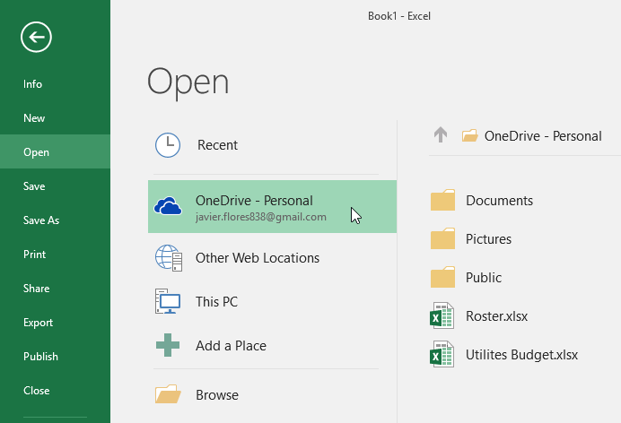
Để tạo một sổ làm việc trống mới:
- Chọn tabTệp.Backstage viewsẽ xuất hiện.
 2. ChọnMới, sau đó nhấp vàoBlank workbook.
2. ChọnMới, sau đó nhấp vàoBlank workbook.
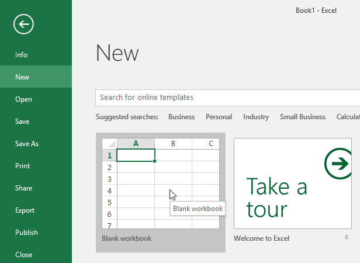
3. Một sổ làm việc trống mới sẽ xuất hiện.Để mở một sổ làm việc hiện có:
Ngoài việc tạo sổ làm việc mới, bạn thường cần mở sổ làm việc đã được lưu trước đó. Để tìm hiểu thêm về cách lưu sổ làm việc, hãy truy cập bài học của chúng tôi về Lưu và chia sẻ sổ làm việc.
- Điều hướng đếnBackstage view, sau đó nhấp vàoMở.
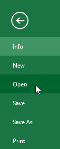
2. ChọnMáy tính, sau đó nhấp vàoDuyệt. Bạn cũng có thể chọnOneDriveđể mở các tệp được lưu trữ trênOneDrivecủa mình.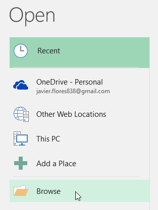
3. Hộp thoạiMởsẽ xuất hiện. Xác định vị trí và chọnsổ làm việccủa bạn, sau đó nhấp vàoMở.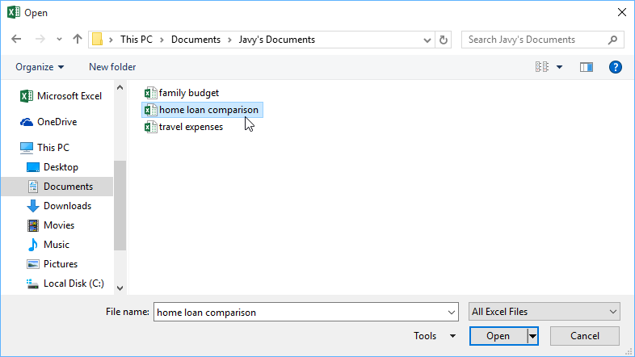
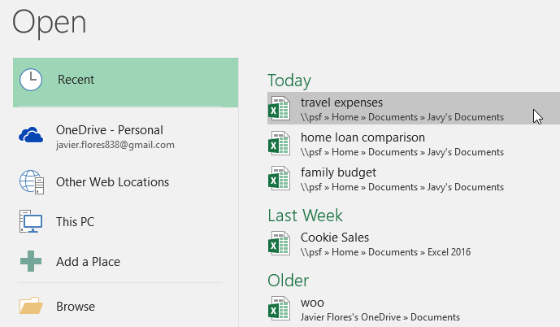
Để ghim một sổ làm việc:
Nếu bạn thường xuyên làm việc vớicùng một sổ làm việc, bạn có thểghim nóvào chế độ xem Backstage để truy cập nhanh hơn.
- Điều hướng tớiHậu trườngxem, sau đó nhấp vàoMở.sổ làm việc được chỉnh sửa gần đâycủa bạn sẽ xuất hiện.
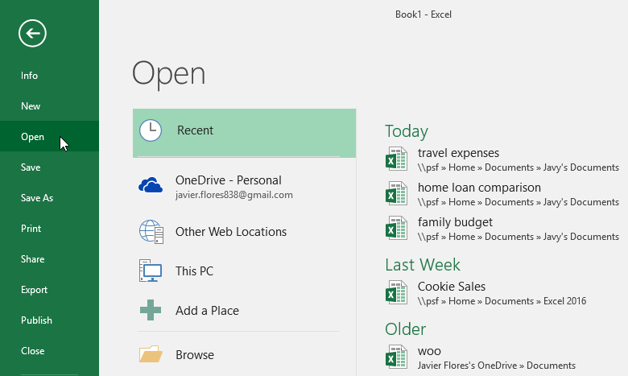
2. Di chuột quasổ làm việcbạn muốn ghim.biểu tượng đinh ghim*sẽ xuất hiện bên cạnh sổ làm việc. Nhấp vào*biểu tượng đinh ghim.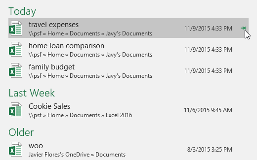
3. Sổ làm việc sẽ ở trong Sổ làm việc Gần đây. Đểbỏ ghimsổ làm việc, chỉ cần nhấp lại vào biểu tượng đinh ghim.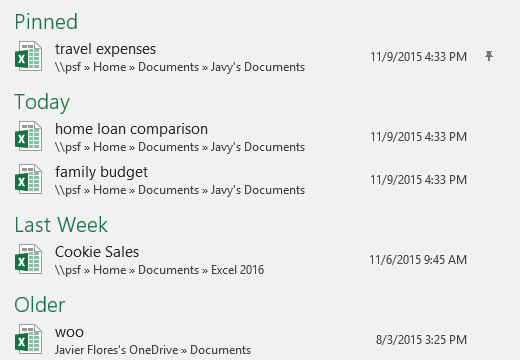
Sử dụng mẫu
mẫulà mộtbảng tính được thiết kế sẵnmà bạn có thể sử dụng để tạo sổ làm việc mới một cách nhanh chóng. Các mẫu thường bao gồmtùy chỉnhđịnh dạngvàđược xác định trướccông thức, vì vậy chúng có thể giúp bạn tiết kiệm rất nhiều thời gian và công sức khi bắt đầu một dự án mới.
Để tạo một sổ làm việc mới từ một mẫu:
- Nhấp vào tabTệpđể truy cậpHậu trườngxem.
2. ChọnMới. Một số mẫu sẽ xuất hiện bên dưới tùy chọnBlank workbook.
3. Chọn mộtmẫuđể xem lại.
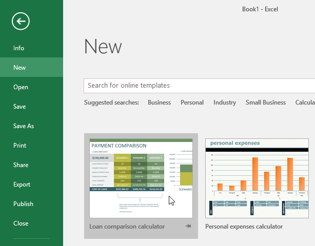
4. bản xem trướccủa mẫu sẽ xuất hiện cùng vớithông tin bổ sung*về cách sử dụng mẫu. 5. Nhấp vào*Tạođể sử dụng mẫu đã chọn.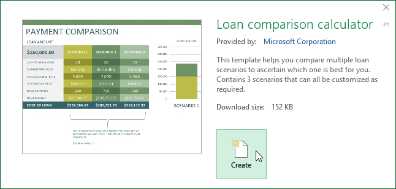
6. Một sổ làm việc mới sẽ xuất hiện cùng vớimẫu đã chọn**.Bạn cũng có thể duyệt các mẫu theodanh mụchoặc sử dụngthanh tìm kiếmđể tìm nội dung cụ thể hơn.
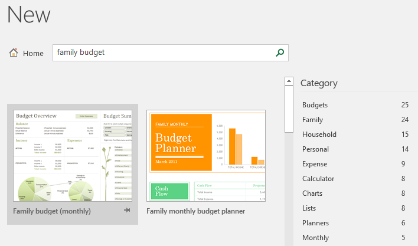
Điều quan trọng cần lưu ý là không phải tất cả các mẫu đều do Microsoft tạo. Nhiều mẫu được tạo bởi nhà cung cấp bên thứ ba và thậm chí cả người dùng cá nhân, vì vậy một số mẫu có thể hoạt động tốt hơn những mẫu khác.
Chế độ tương thích
Đôi khi bạn có thể cần làm việc với sổ làm việc được tạo trong các phiên bản Microsoft Excel cũ hơn, như Excel 2010 hoặc Excel 2007. Khi bạn mở các loại sổ làm việc này, chúng sẽ xuất hiện trongChế độ tương thích.
Chế độ tương thíchtắtmột số tính năng nhất định, do đó bạn sẽ chỉ có thể truy cập các lệnh có trong chương trình được sử dụng để tạo sổ làm việc. Ví dụ: nếu bạn mở sổ làm việc được tạo bằng Excel 2003, bạn chỉ có thể sử dụng các tab và lệnh có trong Excel 2003.
Trong hình ảnh bên dưới, bạn có thể thấy sổ làm việc đang ở Chế độ tương thích, được chỉ báo ở đầu cửa sổ, bên phải tên tệp. Điều này sẽ vô hiệu hóa một số tính năng của Excel, tính năng này sẽ chuyển sang màu xám trên Ribbon.
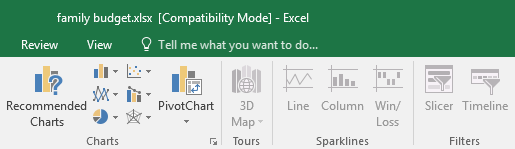
Để thoát khỏi Chế độ tương thích, bạn cầnchuyển đổisổ làm việc sang loại phiên bản hiện tại. Tuy nhiên, nếu bạn đang cộng tác với những người khác chỉ có quyền truy cập vào phiên bản Excel cũ hơn, tốt nhất bạn nên để sổ làm việc ở Chế độ tương thích để định dạng không thay đổi.
Để chuyển đổi một sổ làm việc:
Nếu bạn muốn truy cập vào các tính năng mới hơn, bạn có thểchuyển đổibảng tính sang định dạng tệp hiện tại.
Lưu ý rằng việc chuyển đổi tệp có thể gây ra một số thay đổi đối vớibố cục ban đầucủa sổ làm việc.
- Nhấp vào tabTệpđể truy cập chế độ xem Hậu trường.
2. Xác định vị trí và chọn lệnhConvert.
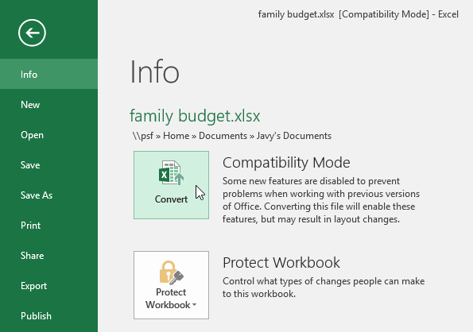
3. Hộp thoạiSave Assẽ xuất hiện. Chọnvị trínơi bạn muốn lưu sổ làm việc, nhậptên tệpcho sổ làm việc và nhấp vàoLưu.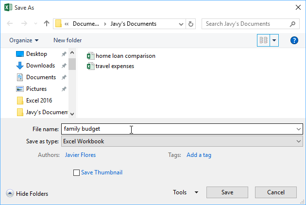
4. Sổ làm việc sẽ được chuyển đổi sang loại tệp mới nhất.Thử thách!
- Mở sổ làm việc thực hành của chúng tôi.
- Lưu ý rằng sổ làm việc của chúng tôi mở ởChế độ tương thích.Chuyển đổisổ làm việc sang định dạng tệp hiện tại. Một hộp thoại sẽ xuất hiện hỏi bạn có muốn đóng và mở lại tệp để xem các tính năng mới hay không. ChọnCó.
- Trong chế độ xem Backstage,ghimmột tệp hoặc thư mục.
/en/excel/save-and-sharing-workbooks/content/